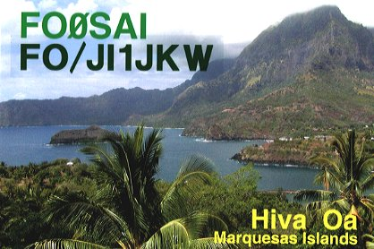
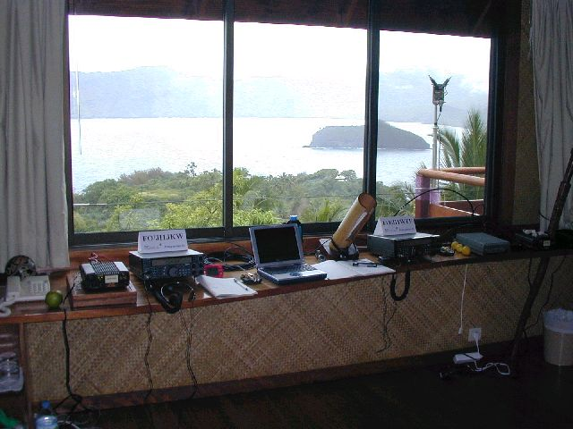
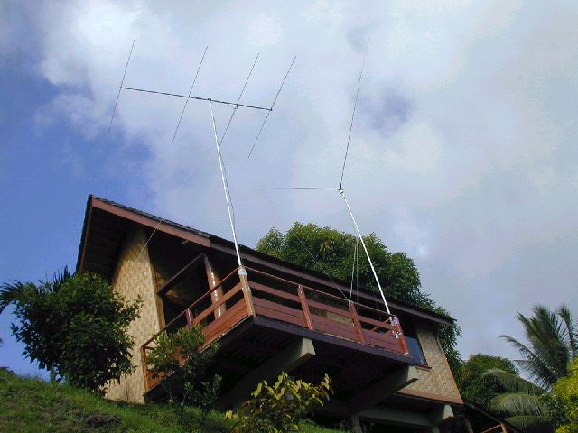

話題の局・QSL
FO/JI1JKW・Marquesas Island

FO/JI1JKW・斎藤さんのQSL
Marquesas IslandからFO/JI1WTF・野田さんと一緒に運用した。
前回、FO0SAIで運用した時にはJAとはQSO出来なかった。
|
◎ FO(Marquesas Is)運用報告 2002年10月9日から12日(現地時間)までFO(Marquesas Is)から運用したJI1WTF・野田さん、JI1JKW・齋藤さんの両局は、 マルケサスからの運用前にFO(French Polynesia)からもQRV、多くのJA'sとQSOしている。 今回の6mでの運用結果は次の通り。(以下、JI1WTF・野田さんのリポートから) ○ FO(French Polynesia)から FO/JI1JKW JA=54局QSO DX(KH6)=2局QSO 計56-QSO(SSB ONLY） F0/JI1WTF JA=47局QSO 計47-QSO（CW ONLY）* 途中でオペレーターがチェンジしたので、CWの最初をFO/JI1JKWと勘違いしている方が多かった。 ○ FO(Marquesas Is)から FO/JI1JKW JA=15局QSO DX局(南米,KH6,5W1,FO)=33局QSO 計48-QSO FO/JI1WTF JA=15局QSO DX局(南米,KH6,5W1,FO)=54局QSO 計69-QSO* JI1JKWとJI1WTFとダブってQSOしている局が多くあります(特に南米)。 SSB/CW両方QSOされた方もおります。今回マルケサスをWorked.されたJA局は20局程度。 (JI1JKWとJI1WTFのダブルカウント、両モードを省いた計算）
  FO/JI1JKW & FO/JI1WTFのシャック(左)と運用場所となったロッジと6m-4elアンテナ タイトルの写真は島(Hiva Oa)の先端方向。中央の小島は無人島のHanakee Rock。 10/12のJAオープンでアンテナを向けた方向(220deg)。
* FO(マルケサス)からの最初のQSO局は、10月9日、06:52zに50.110でCQを出していた5W1SA。
|


成田エキスプレスに乗り込むJI1WTF(左)、JI1JKWの両局と機材